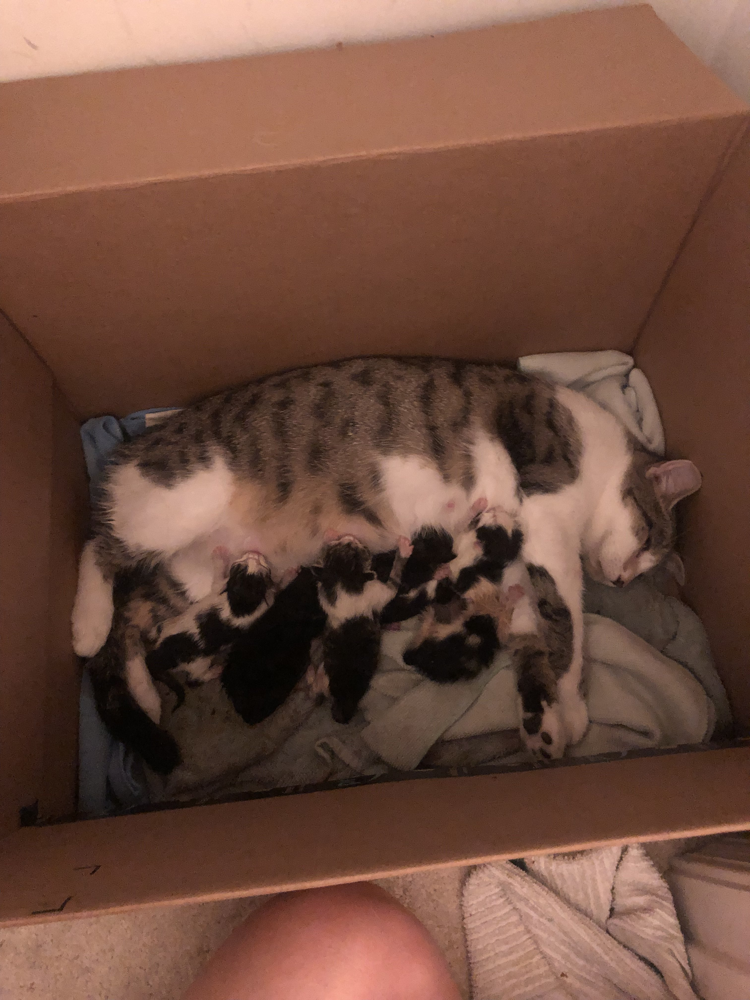
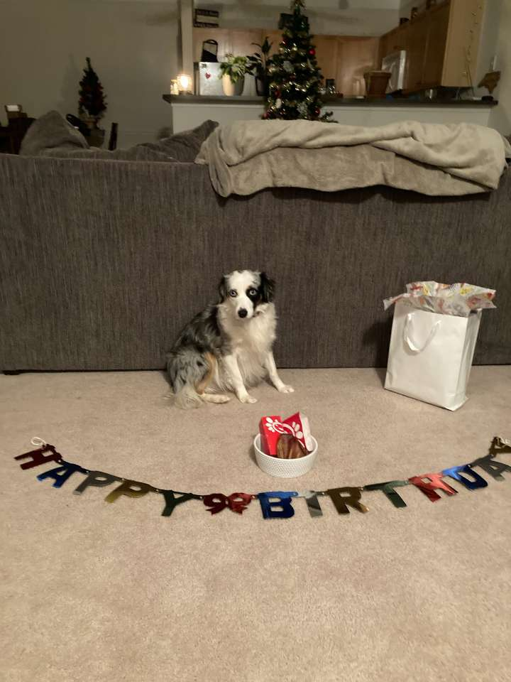
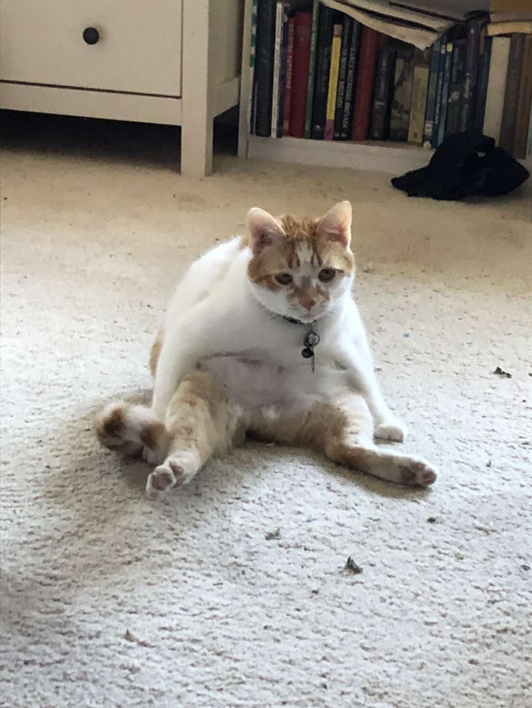
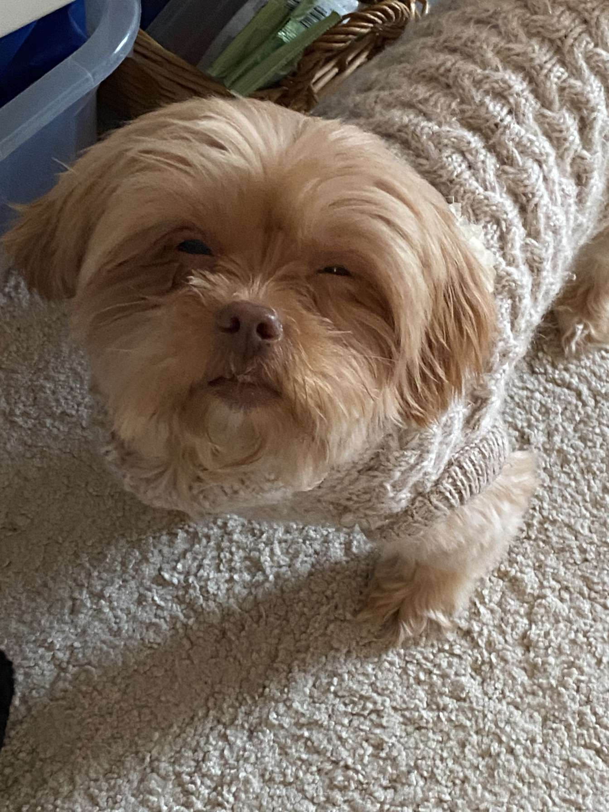
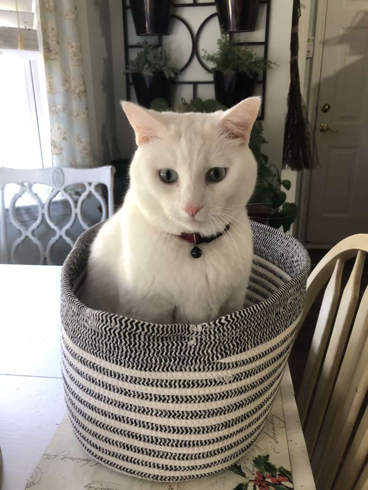

Home
Welcome to my pet page! This is for the midterm project of ITIS3135. Please use the navbar above to take a look at my beautiful babies!
Each page will provide a picture of the animal, a brief description as well as a table so you can compare their traits!!!
Montana
Montana is an Australian Shepard. Montana loves taking you for the longest walk possible. She also loves to zoom around and run with other dogs at the dog park. Her favorite toy is her lamby and she sleeps with it every night too
| Breed | Australian Shepard |
| Age | 5 |
| Owner | Brother |
| Eating Habits | Nibbles at food |
| Favorite Toy | Lamby |
| Personality | Oddly Human |
Oliver
Oliver was a rescue cat we found a few years ago. We found him in a dumpster looking for food. We brought him in and instantly fell in love with him! It took him awhile to acclimate to living in a house, every meal he thought was his last so he scarfed it down as fast as possible and was constantly looking for more food. Eventually he realized he will be here with us forever and became much more of a healthy eater and loves cuddling now!
| Breed | Tabby |
| Age | 9 |
| Owner | Me |
| Eating Habits | Polite but adventurous |
| Favorite Toy | Cat tower |
| Personality | Cuddle Boi |
Bella
We got Bella a few years ago and she is a very interesting dog. She needs some more training as she loves to beg for food as we are eating, so we normally put her in another room. She also gets allergies which is why she looks like she does in the picture. She also LOVES her back being scratched, she will often find ways to scratch it herself. She walks underneath chairs or low tables and rubs her back against them. She's also terrified of thunder and fireworks. Her favorite sleeping position is underneath the covers by your feet.
| Breed | Shih Tzu Mix |
| Age | 4 |
| Owner | Girlfriend |
| Eating Habits | Begger |
| Favorite Toy | Small tables |
| Personality | Leg Warmer |
Finn
Finn is a chonker. He likes to be lazy, shed, sleep and eat.
| Breed | White Cat |
| Age | 6 |
| Owner | Me |
| Eating Habits | All the food |
| Favorite Toy | Food |
| Personality | Sloth |